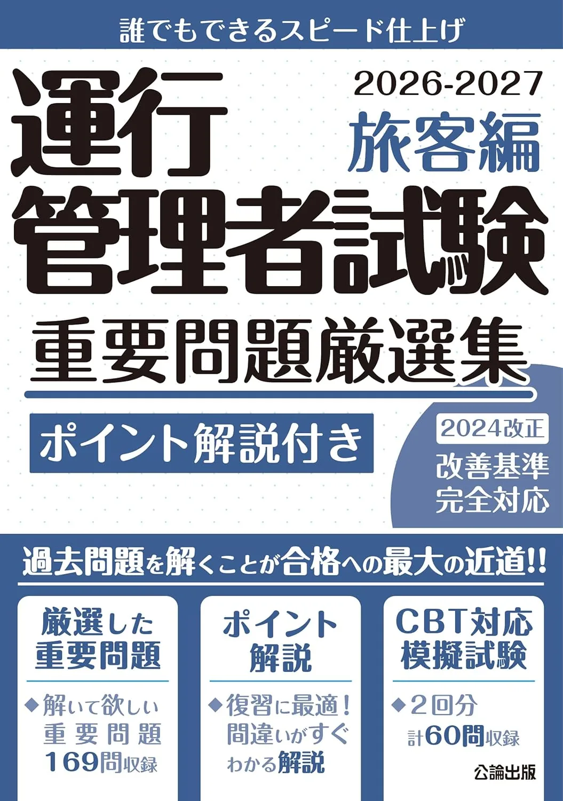
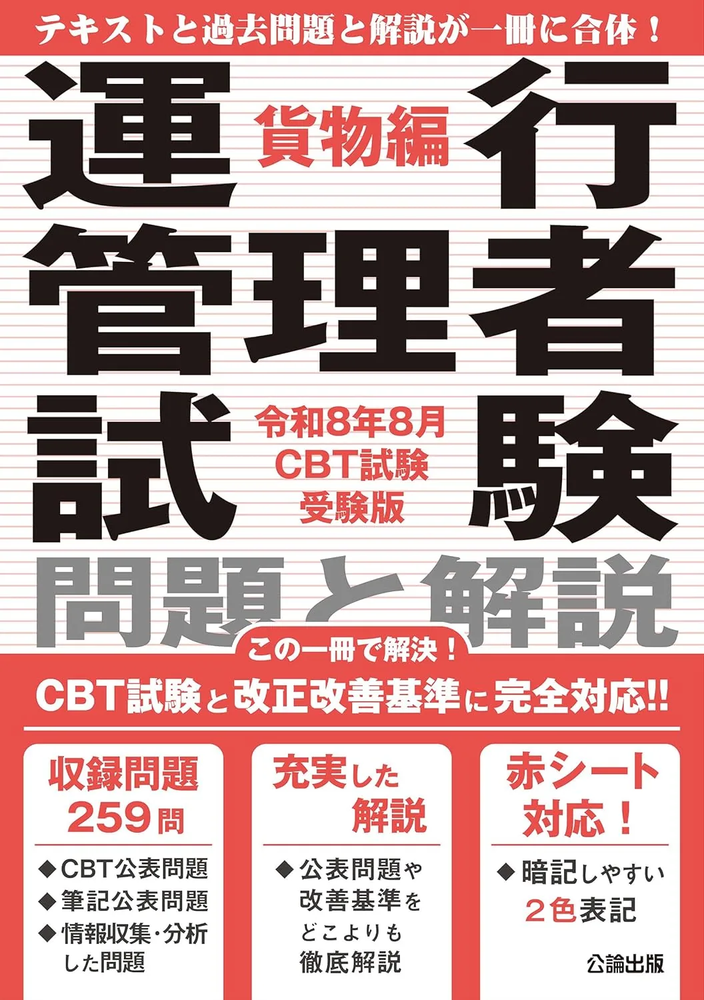

運行管理者試験のCBT対策問題集3選【重要問題・令和8年8月版】
CBT対策問題集3冊を、導入時期・通し演習・貨物/旅客区分で比較します。CBTは四肢択一で、5分野合計30問・90分です。合格は18/30以上、かつ分野別の最低正解（基準②）を満たすこと。受験手数料は6,000円＋660円＝6,660円です（要項で再確認）。試験方式・実施回は運行管理者試験センター要項が正本です。価格・在庫は購入前に各Amazonページでご確認ください。
この記事の信頼性について
| 執筆 | 運管マスター編集部（資格学習サイトの編集チーム） |
|---|---|
| 確認 | 公式情報確認担当（公開前に一次情報との照合を行う担当者） |
| 事実確認日 | 2026-06-12 |
| 主な参照元 |
1CBT6週前：対策問題集の段階
CBT対策問題集は、テキスト・問題集で18/30＋分野②を固めた後の総仕上げ演習です。メイン教材の代わりにはなりません。
| 段階 | 教材の役割 |
|---|---|
| 1 | テキストで5分野を理解 |
| 2 | 問題集で得点を記録 |
| 3 | 30問90分の通し |
| 4 | CBT対策で頻出を絞る |
たとえば、18/30＋②を達成したら、CBT6週前に30問の通しを行い、おすすめ問題集3選を終えてから対策問題集へ進んでください。
CBT・重要問題3選（比較）
価格は執筆時点（2026-06-04）のAmazon税込参考です。試験方式・実施回は公益財団法人 運行管理者試験センター（公式）で必ず確認してください。
| 順位 | 商品名 | 価格（税込参考） | ページ数 | 向いている人 |
|---|---|---|---|---|
| 1 | 運行管理者試験 重要問題厳選集 貨物編 2026-2027 | ¥2,200 | 256 | 貨物試験で頻出論点を絞って演習したい人 |
| 2 | 運行管理者試験 重要問題厳選集 旅客編 2026-2027 | ¥2,200 | 256 | 旅客試験で頻出論点を短期集中で押さえたい人 |
| 3 | 運行管理者試験 問題と解説 貨物編 令和8年8月CBT試験受験版 | ¥2,860 | 304 | CBT本番形式で貨物試験の演習をしたい人 |

運行管理者試験 重要問題厳選集 貨物編 2026-2027
- 重要問題を厳選して演習量を効率化
- CBT移行期の出題傾向整理に向く
- テキスト読了後の総仕上げにも使える

運行管理者試験 重要問題厳選集 旅客編 2026-2027
- 旅客向け重要問題を1冊に集約
- 貨物合格後の旅客対策の演習メインに向く
- 厳選集で直前期の弱点補強に使いやすい

運行管理者試験 問題と解説 貨物編 令和8年8月CBT試験受験版
- 令和8年8月CBT受験向けの問題と解説
- PC試験の時間感覚を養う練習に向く
- 重要問題厳選集と併用して演習量を確保しやすい
23冊の用途：貨物・旅客・CBT本番形式
2026年度版3冊の用途の違いです。1冊を80％使い切ってから次を検討します。
| 教材 | 主な用途 |
|---|---|
| 3728貨物厳選 | 頻出絞り・弱点補強 |
| 3736旅客厳選 | 旅客CBT本格 |
| 3760CBT版 | 本番形式の通し |
たとえばCBT6週前に3760で30問90分の通しを行い、CBT4週前に3728を週25問。18/30に届かない分野があれば、対策問題集より弱点演習を優先します。CBTの操作は運行管理者試験の形式の記事で確認してください。
31位 重要問題厳選・貨物：弱点25問/週
「運行管理者試験 重要問題厳選集 貨物編 2026-2027」（256頁・Amazon税込参考2,200円・4862753728）は、テキスト読了後の弱点補強に向きます。
| 強み | 弱み・注意 |
|---|---|
| 頻出絞り◎ | 18/30に届かないうちは不足 |
| 演習効率◎ | テキスト未読では空転 |
| 貨物CBT向き | 価格はAmazon要確認 |
CBT4週前に3728を週25問。車両分野が伸びないなら点検章＋3728で補強し、CBT2週前に30問通し。合格基準18/30＋②は運行管理者試験の合格点の記事で確認してください。
42位・3位 旅客厳選・令和8年8月CBT版
重要問題厳選集 旅客編（256頁・2,200円参考・4862753736）と、問題と解説 貨物編 令和8年8月CBT試験受験版（304頁・2,860円参考・4862753760）です。
| 教材 | 向く人 |
|---|---|
| 3736旅客 | 貨物合格後の旅客 |
| 3760CBT版 | 30問90分の計測 |
| 併用 | 3728+3760 |
CBT6週前に3760で30問90分を2回。1問あたりの時間配分を確認します。CBT4週前は新規教材を止め、おすすめテキスト3選が未読なら先にテキストへ戻ってください。
5運行管理者試験の形式の記事との2列比較表
試験形式の確認と本記事（Amazon3冊比較）は、2記事で分担します。試験形式記事はCBTの操作・30問90分・合格基準・当日フロー、本記事は公論3728・3736・3760の具体比較とCBT6週前・4週前の導入に特化します。
| 論点 | 試験形式記事 | 本記事（3冊比較） |
|---|---|---|
| 焦点 | CBT形式・手順 | 商品比較 |
| 時期 | 開始日Day0 | CBT6週前〜 |
| 成果物 | 形式メモ | 直前1〜2冊 |
| 出口 | 運行管理者試験の当日の流れ | 運行管理者試験の合格点 |
- まず試験形式を確認し
- 次に18/30＋②を達成
- CBT6週前に本記事の3760
- CBT2週前に最終通し
- の順が定番
CBT対策だけで完走しようとするのが典型ミスです。
6購入前の確認事項
独学を始める前に、運行管理者試験センター（公式）で受験資格・試験日程・出題範囲（5分野）・合格基準をメモしてください。
CBT対策問題集3選【重要問題・令和8年8月版】の学習計画。
- 公式テキストの章立てと一致させると
- 過去問の分野ラベルとも対応づけやすくなり
ブログやSNSの「最新情報」は、必ず運行管理者試験センターのページと照合してから採用してください。申込期限や受験料は年度ごとに変わるため、カレンダーに締切を入れてから教材を開く習慣が有効です。
7よくある質問
CBT対策問題集だけで合格できますか？
重要問題厳選集とCBT版、両方買いますか？
本記事と試験形式記事の違いは？
記事の基本情報
| ジャンル | 過去問活用 |
|---|---|
| タグ | 独学 / 参考書 |
公式情報の確認
公式情報の確認：運行管理者試験の最新情報は、公益財団法人 運行管理者試験センター（公式）などの公式情報を必ず確認してください。本人に割り当てられた試験会場は受験票の表記が正本です。